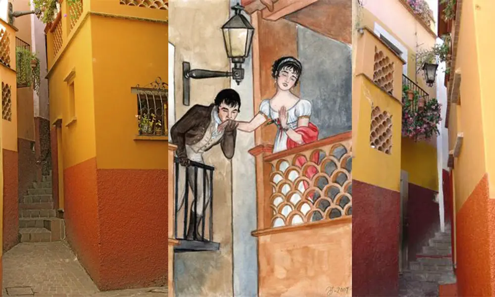

Imágenes




Antes de la llegada de los españoles, la región de Guanajuato estaba habitada por grupos indígenas, principalmente chichimecas, que eran pueblos nómadas y guerreros. En el siglo XVI, los españoles descubrieron grandes yacimientos de plata, lo que provocó el crecimiento de la región. Guanajuato se convirtió en uno de los centros mineros más importantes de la Nueva España, destacando minas como la Valenciana. Gracias a esto, hubo mucha riqueza y desarrollo, pero también desigualdad social. A inicios del siglo XIX, Guanajuato fue escenario del inicio de la Independencia de México. En 1810, el movimiento encabezado por Miguel Hidalgo llegó a la ciudad, donde ocurrió la toma de la Alhóndiga de Granaditas, un evento clave contra el dominio español. Después de la independencia, Guanajuato siguió siendo importante durante el México independiente, participando en distintos conflictos como la Reforma y la Revolución Mexicana, aunque con menor protagonismo que en la independencia. En el siglo XX y XXI, Guanajuato dejó de depender tanto de la minería y comenzó a desarrollarse industrialmente, especialmente en sectores como el automotriz y el calzado. Hoy en día es uno de los estados con mayor crecimiento económico del país.
Guanajuato es muy conocido por sus atractivos turísticos y cultura. Algunos de los lugares más populares son:
Además, el estado es sede del Festival Internacional Cervantino, uno de los eventos culturales más importantes de América Latina.
La cultura de Guanajuato es muy rica y combina tradiciones indígenas y españolas. Se caracteriza por su arte, música, festivales y costumbres que siguen vivas hasta hoy. Uno de los eventos más importantes es el Festival Internacional Cervantino, donde participan artistas de todo el mundo con obras de teatro, música y danza. Una tradición muy representativa son las callejoneadas, recorridos por las calles de la ciudad con música de estudiantinas, donde la gente canta y convive. También destacan sus celebraciones como el Día de Muertos, donde se hacen altares y ofrendas, y otras fiestas religiosas llenas de color y tradición. En el arte, Guanajuato es conocido por su arquitectura colonial, visible en lugares como el Teatro Juárez, además de museos y galerías. La gastronomía también forma parte de su cultura, con platillos típicos como las enchiladas mineras y dulces tradicionales como la cajeta.
